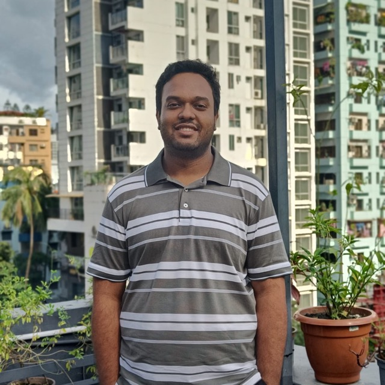

Focus
Federated learning
for medical imaging
for medical imaging
About
Why I want to do this
Research
Research interests
Six threads, three of which I consider my centre of gravity. They converge on one question: how do you build a model that a hospital can actually train, actually run, and actually trust?
Technical skills
Relevant coursework
Languages
Current research
Undergraduate thesis
The work I care most about, described the way I would describe it to someone who might supervise the next stage of it.
Where my research stands
Journey
Education & experience
Education
Experience
Teaching interests
Selected work
Projects
Research code, applied machine learning, and the backend systems that taught me what it takes to keep a model running after the notebook is closed.
Recognition
Competitions & achievements
Where I have put the work in front of other people and had it ranked.
Certifications & certificates
Moments
Latest